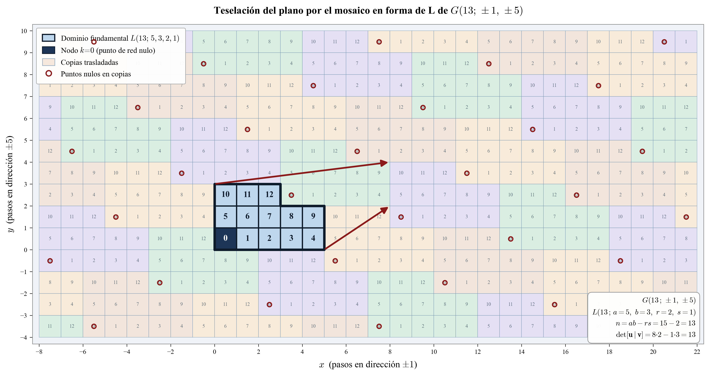

Grafos Circulantes y Redes de Doble Lazo
En el capítulo anterior identificamos el grafo abstracto de Heegaard de un espacio lente como un grafo circulante. Esta misma familia de grafos ha sido estudiada de forma independiente y muy extensa desde otro punto de vista: el de las redes de interconexión. En esa literatura, un circulante con dos generadores simétricos se conoce como una red de doble lazo no dirigida (undirected double-loop network), y se denota
\[G(n;\, \pm s_1,\, \pm s_2)\]
donde \(n\) es el número de nodos, \(1 \leq s_1 < s_2 < n/2\) son los pasos, y \(\gcd(n, s_1, s_2) = 1\).
Adoptar esta terminología nos permite conectar nuestros objetos topológicos con una rica teoría desarrollada para optimizar el diseño de redes. El estudio de estas redes fue propuesto originalmente por Wong y Coppersmith para la organización de memorias multimodulares y representan un punto intermedio práctico entre las redes de un solo lazo (anillos simples), que sufren de largos retardos y baja fiabilidad, y las redes con más de dos lazos, que requieren hardware costoso y control complejo. Gracias a este equilibrio, las redes de doble lazo se han utilizado en diversas aplicaciones, como en topologías de redes de computadoras (SONET, FDDI), y para el alineamiento de datos en procesadores SIMD.
Es el grafo no dirigido \((V, E)\) con
\[V = \mathbb{Z}/n\mathbb{Z} = \{0, 1, \ldots, n-1\}\]
\[E = \bigl\{\{i,\, i \pm s_1 \bmod n\},\;\{i,\, i \pm s_2 \bmod n\} \;\big|\; i = 0, 1, \ldots, n-1\bigr\}\]
La red es conexa si y solo si \(\gcd(n, s_1, s_2) = 1\). Todo vértice tiene grado \(4\), salvo cuando \(2s_k \equiv 0 \pmod{n}\), caso en que dos vecinos coinciden y el grado se reduce.
La familia que estudiamos: \(G(p;\,\pm 1,\,\pm q)\)
En el contexto de este curso, los grafos de doble lazo de interés son los que surgen del encaje de Heegaard del espacio lente \(L(p,q)\). Fijamos, pues, \(n = p\) primo y pasos \(s_1 = 1\), \(s_2 = q\):
El grafo abstracto subyacente al encaje de Heegaard de \(L(p,q)\) en el toro es el grafo de doble lazo
\[G(p;\,\pm 1,\,\pm q)\]
con \(p\) vértices, \(2p\) aristas y grado \(4\) en cada vértice. Las \(p\) aristas de paso \(1\) forman un ciclo hamiltoniano, y las \(p\) aristas de paso \(q\) forman otro.
El Mosaico en Forma de L
Importancia: Diagrama de Distancias Mínimas
Un resultado fundamental de la teoría de redes de doble lazo es que el mosaico en forma de L codifica el diagrama de distancias mínimas (MDD) de la red. Esto es crucial para problemas de optimización, como encontrar la red con el diámetro mínimo (máximo retardo de transmisión), ya que el diámetro se puede calcular directamente a partir de los parámetros del mosaico [1].
Más aún, se ha demostrado que dos redes de doble lazo que realizan la misma forma de L son isomorfas [2]. Esto establece una conexión profunda entre la geometría combinatoria del mosaico y la estructura de isomorfismo del grafo abstracto, un análogo en el mundo de las redes de lo que observamos en los espacios lente con los grafos de Heegaard [3].
Construcción del patrón
Para el grafo \(G(p;\pm 1, \pm q)\), construimos el patrón de etiquetado en el plano entero siguiendo el procedimiento de Wong y Coppersmith:
Ordenar los puntos del primer cuadrante \(\mathbb{Z}_{\geq 0}^2\) por distancia Manhattan creciente: \[(0,0),\;(1,0),\;(0,1),\;(2,0),\;(1,1),\;(0,2),\;\ldots\]
En cada punto \((x, y)\), calcular \(k \equiv x + yq \pmod{p}\).
Si \(k\) no ha aparecido antes, escribirlo en \((x, y)\); si ya apareció, dejar el punto en blanco.
Detenerse cuando se hayan etiquetado los \(p\) valores \(\{0, 1, \ldots, p-1\}\).
La región resultante tiene siempre forma de L y tesela el plano entero.
La región obtenida por el procedimiento anterior se llama mosaico en forma de L con parámetros enteros \(a, b, r, s\) tales que
\[a, b \geq 2, \qquad 0 \leq r < a, \qquad 0 \leq s < b, \qquad n = ab - rs\]
Se escribe \(L(n;\, a, b, r, s)\) y es el rectángulo \(a \times b\) al que se le ha quitado el rectángulo \(r \times s\) de una esquina.
El mosaico \(L(n;\,a,b,r,s)\) tesela el plano \(\mathbb{Z}^2\) sin solapamientos ni huecos. Los vectores de traslación que generan la teselación son los puntos de red nulos del reticulado, es decir, los puntos \((x,y) \in \mathbb{Z}^2\) con \(x + yq \equiv 0 \pmod{p}\) más cercanos al origen distintos de \((0,0)\).
Esta propiedad es la base del algoritmo de enrutamiento óptimo en tiempo constante para redes de doble lazo.
Lemas estructurales
Sean \(L(n;\,a,b,r,s)\) el mosaico determinado por \(G(n;\,1,q)\). Entonces:
\(a > r \geq 0\), \(\;b > s \geq 0\), \(\;b \geq r\), \(\;a > s\), \(\;ab - rs = n\)
\(-a\cdot 1 + s\cdot q \equiv 0 \pmod{n}\)
\(-r\cdot 1 + b\cdot q \equiv 0 \pmod{n}\)
\((a-r)\cdot 1 + (b-s)\cdot q \equiv 0 \pmod{n}\)
Estos puntos de red nulos \((-a, s)\), \((-r, b)\) y \((a-r, b-s)\) (o sus equivalentes positivos módulo traslaciones del reticulado) son exactamente los vértices del reticulado que genera la teselación periódica del plano.
Ejemplo: \(G(13;\,\pm 1,\,\pm 5)\)
Construcción paso a paso
Aplicamos el procedimiento al grafo \(G(13;\,\pm 1,\, \pm 5)\) con \(p=13\), \(q=5\).
| Punto \((x,y)\) | \(x + 5y \bmod 13\) | ¿Nuevo? |
|---|---|---|
| \((0,0)\) | \(0\) | ✓ |
| \((1,0)\) | \(1\) | ✓ |
| \((0,1)\) | \(5\) | ✓ |
| \((2,0)\) | \(2\) | ✓ |
| \((1,1)\) | \(6\) | ✓ |
| \((0,2)\) | \(10\) | ✓ |
| \((3,0)\) | \(3\) | ✓ |
| \((2,1)\) | \(7\) | ✓ |
| \((1,2)\) | \(11\) | ✓ |
| \((0,3)\) | \(15 \equiv 2\) | ✗ |
| \((4,0)\) | \(4\) | ✓ |
| \((3,1)\) | \(8\) | ✓ |
| \((2,2)\) | \(12\) | ✓ |
| \((1,3)\) | \(16 \equiv 3\) | ✗ |
| \((4,1)\) | \(9\) | ✓ \(\;\leftarrow\) completo |
Con los 13 valores etiquetados, el mosaico resultante es \(L(13;\,5,\,3,\,2,\,1)\):
\[n = ab - rs = 5 \cdot 3 - 2 \cdot 1 = 13 \checkmark\]
La disposición es:
\[\begin{array}{ccccc} \boxed{10} & \boxed{11} & \boxed{12} & & \\ \boxed{5} & \boxed{6} & \boxed{7} & \boxed{8} & \boxed{9} \\ \boxed{0} & \boxed{1} & \boxed{2} & \boxed{3} & \boxed{4} \end{array}\]
5 columnas en \(y=0,1\) y 3 columnas en \(y=2\); la esquina superior derecha de \(r \times s = 2 \times 1\) celdas queda recortada.
Verificación de los lemas con \(a=5,\,b=3,\,r=2,\,s=1\)
\[-a + sq = -5 + 1\cdot 5 = 0 \equiv 0 \pmod{13} \checkmark\] \[-r + bq = -2 + 3\cdot 5 = 13 \equiv 0 \pmod{13} \checkmark\] \[(a-r) + (b-s)q = 3 + 2\cdot 5 = 13 \equiv 0 \pmod{13} \checkmark\]
Los puntos de red nulos más próximos (en coordenadas positivas) son \((8,\,1)\) y \((3,\,2)\), con determinante \(8\cdot 2 - 1\cdot 3 = 13 = p\), confirmando que generan el reticulado correcto.
Diagrama de la teselación

Referencias
Hwang, F. K. (2001). A complementary survey on double-loop networks. Theoretical Computer Science, 263(1-2), 211–229. https://doi.org/10.1016/S0304-3975(00)00243-7
Chen, C., & Hwang, F. K. (2000). The Minimum Distance Diagram of Double-Loop Networks. IEEE Transactions on Computers, 49(9), 977–979. https://doi.org/10.1109/12.869029
Frías, J., Gómez-Larrañaga, J. C., León-Medina, J. L., & Manjarrez-Gutiérrez, F. (2025). 3-manifold polynomials. arXiv:2510.06651 [math.GT]. https://doi.org/10.48550/arXiv.2510.06651